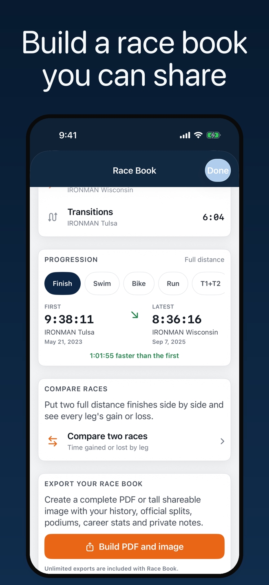
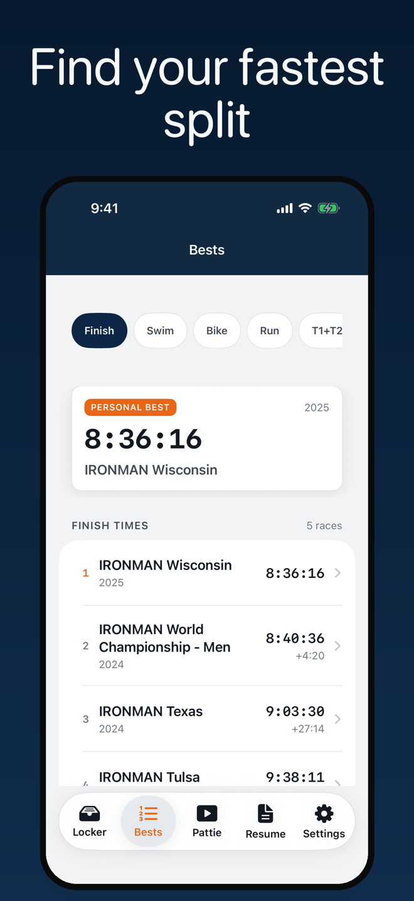
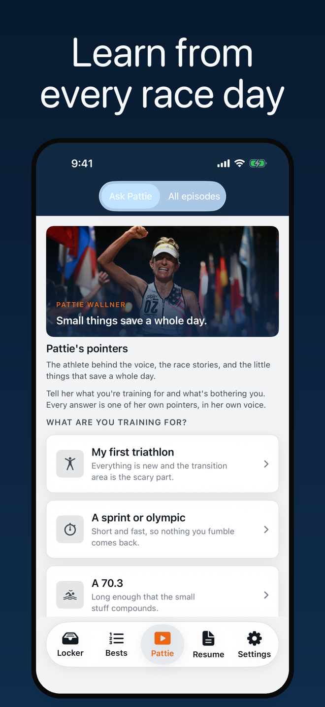
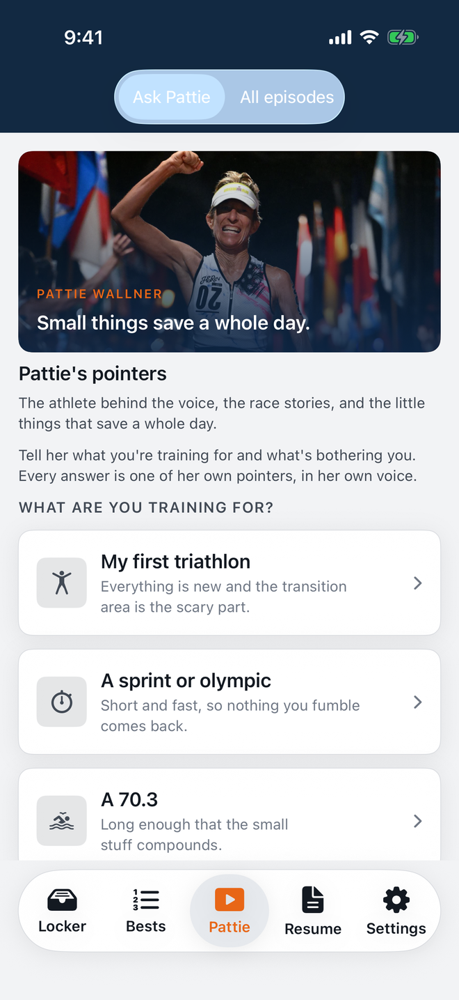

Type your name once. Every full and half distance finish arrives with swim, T1, bike, T2 and run splits, the places behind them, and the field that raced them.
iPhone · Full and half distance · No account
Download on the App Store



Nineteen filmed tips from Pattie Wallner, free for everyone. Pick what you are training for, pick the moment that is bothering you, and Ask Pattie walks you to the pointer that covers it. There is no chatbot in here: every answer is a clip she actually recorded, so it works with no signal and costs nothing to ask.

Sixteen full distance finishes and a lot of race mornings, boiled down to the fixes that keep a small problem from ending a long day.
Find the split, understand the day it came from, and keep the record somewhere you can actually use it.
Type the name you registered with and pick yourself out of the official results index. If one race went in under a maiden name or a misspelling, add that registration too and it joins the same locker.
Finishes, podiums and the year you started, over a list of every race with its date, bib, official time and division place. Personal best legs are flagged on the row, so the standout races surface without opening anything.
Open a race and read the whole day leg by leg, with the overall and division rank each split earned. Zeroed legs from a DNF stay empty instead of pretending to be a fast one.
A rank on its own means nothing without the size of the field behind it. Each leg shows its place out of everyone who raced it, and the percentile that follows.
Career personal bests for finish, swim, bike, run and transitions, plus first-to-latest progression on each leg. Full and half distance are always ranked separately, because a half distance bike split does not belong in the same list as a full.
Search another athlete and read their full and half distance history the same way, for a training partner, a rival, or the person who just beat you. Your own locker is untouched.
Conditions, nutrition, gear and what you would do differently, kept on the result that produced them. Notes stay on the phone and only leave it if you put them in an export.
Nineteen filmed pointers and a guided path to the right one, free with the app. Turn on Pattie Mode and she turns up in the corner with a relevant tip while you browse, in her own recorded voice.
One lifetime purchase adds like-for-like comparison between any two races at the same distance, showing the time gained or lost on every leg, plus unlimited polished PDF and image exports built on the phone. No subscription, no per-export charge.
Metric or imperial, light or dark or system, and haptics that are off until you ask for them. Watched episodes are cached so they replay offline, and you can clear them whenever you want the space.
Results are shown exactly as each event's timing provider published them. The app sorts and compares that record, it never verifies or rewrites it.
Your locker, your notes and the tips you have already watched are all on the phone. Transition areas are famous for having no bars.
No account, no sign-in, no ads, and no analytics SDK. Your claimed athlete, cached results, race notes and settings live on your iPhone and nowhere else. The app reaches out only to request published results when you search or refresh, and there is no developer-owned database of your racing on the other end.
Privacy Policy →A simpler way to keep a long race history useful.
An official results page tells you what happened in one race. It does not tell you which of your starts held your fastest bike, how much time transitions have quietly cost you over a decade, or where a split landed in the field that actually raced it. Finding any of that means opening a dozen tabs and doing arithmetic.
IM Tri Tracker does the opposite. You type your name once, and a career of published results becomes a locker you can search, rank, annotate and share. Start with the name, then let the app do the sorting.
Almost everything is free, and that is deliberate. Search, your complete history, every split, personal bests, progression, leaderboards, field percentiles, race details, notes and the whole Pointers library cost nothing and are never hidden behind a purchase. Your own results are not a paywall.
The one paid boundary is Race Book: like-for-like comparison between two races at the same distance, and unlimited PDF or image exports of the career record. It is a single lifetime purchase with no subscription and no per-export charge, and Restore Purchases is there for a new phone or a reinstall.
| Platform | iPhone · iOS 17 or later |
| Framework | SwiftUI · Swift 6 · RevenueCat |
| Data | Published event timing results |
| Distances | Full distance and half distance triathlon |
| Storage | Locker, notes and settings on device |
| Account | None required |
| Purchase | Free, with an optional one-time Race Book unlock |
| Affiliation | Independent app |
Split-first thinking. A best finish is useful. Knowing which race held your best bike, and how far off it you are now, is the reason to come back.
Distance stays honest. Full and half distance are ranked in their own groups rather than flattened into one flattering list, and a result whose claimed distance disagrees with its own splits gets corrected rather than crowned.
Your data is not the product. There is no account system and no server holding your race history. Apple handles purchases, and RevenueCat receives only what is needed to unlock or restore them.
Advice from a person. The tips are filmed clips from one athlete's own race days, not generated text. She can only tell you something she actually said.
The official record stays official. The app makes published results easier to use. The event's timing provider remains the source of truth.
IM Tri Tracker is an independent app. It is not affiliated with, endorsed by, or sponsored by any race organiser, series, or timing company. IRONMAN® and 70.3® are registered trademarks of the World Triathlon Corporation, used here only to identify the races an athlete has entered. Results can change or be incomplete, so check the official result when accuracy matters.
Free to download. No account required.
Download on the App Store